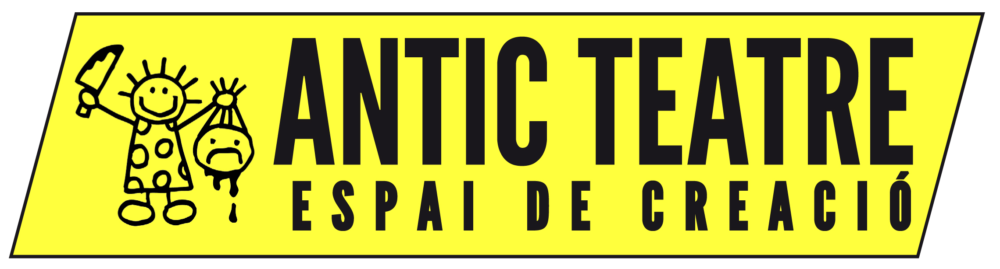
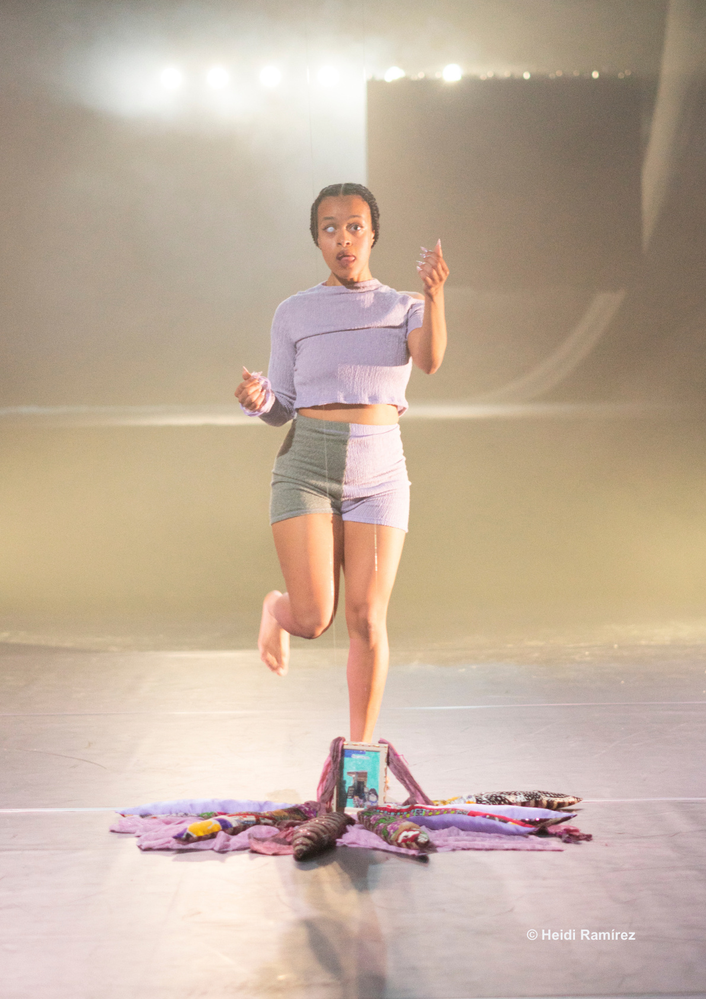
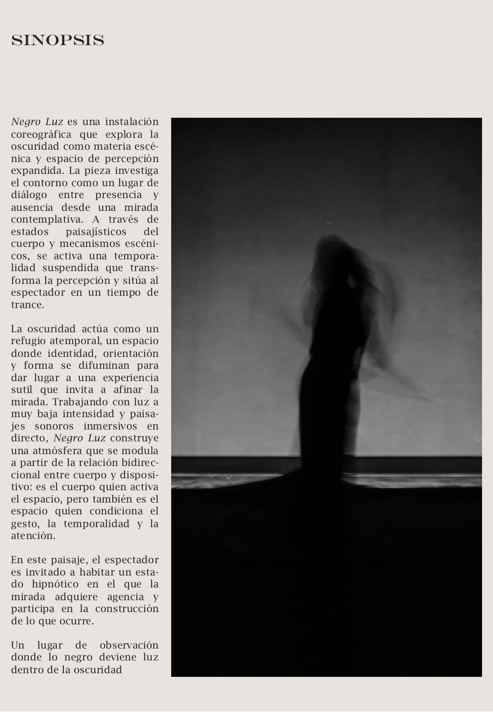
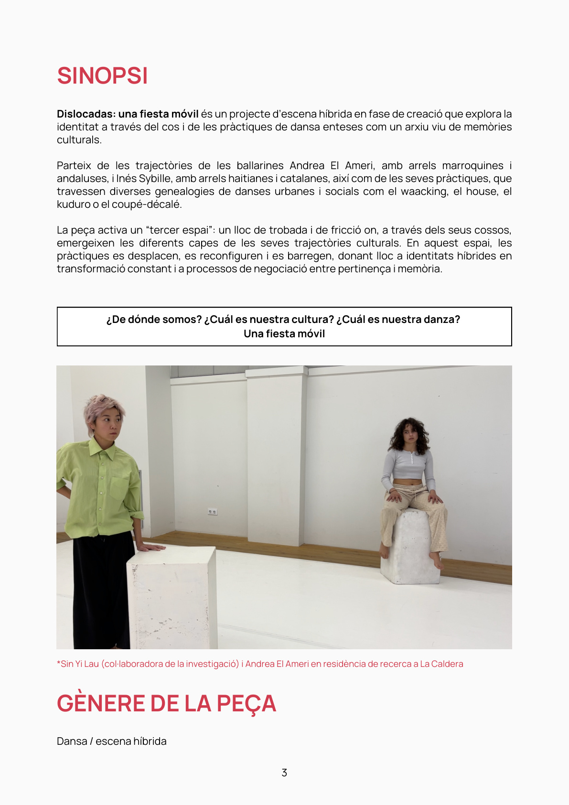
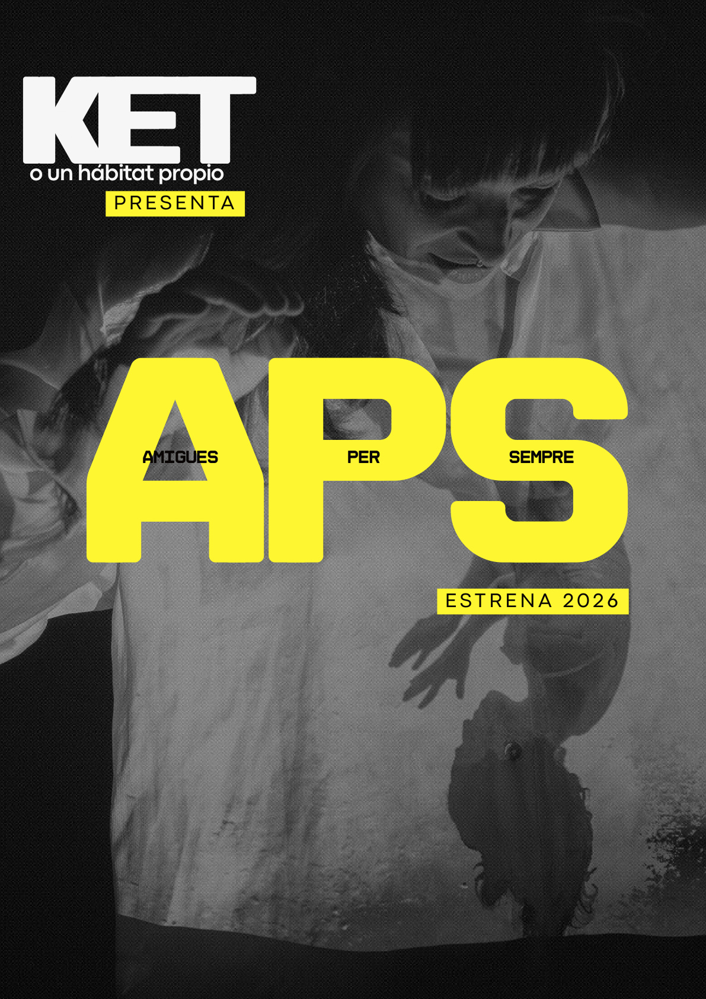
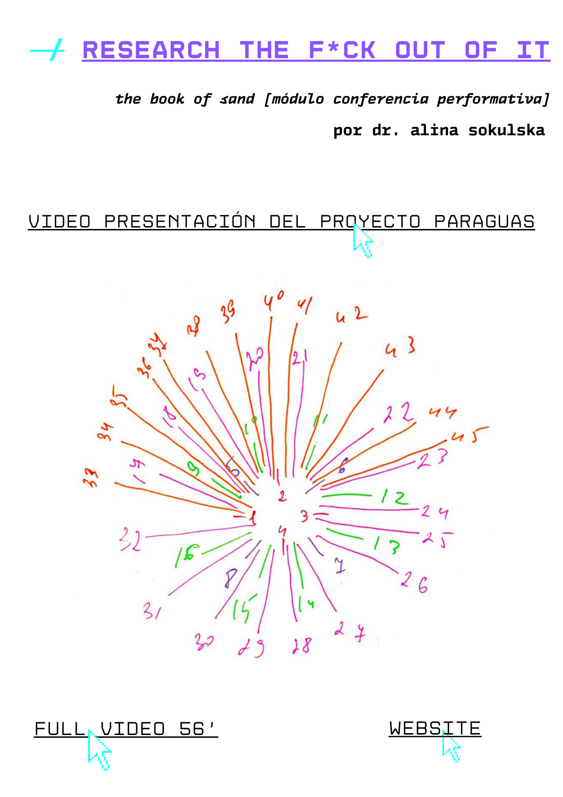
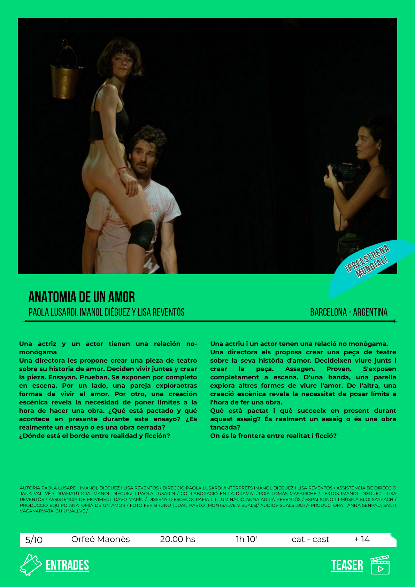

Desde Catalunya, con afinidad Antic
Selección de piezas locales que trabajan cuerpo, archivo, instalación, oscuridad, fiesta, circo híbrido, conferencia performativa y nuevas dramaturgias. Esta versión es una primera maqueta: los textos de recomendación están abiertos para ajustarlos después de la revisión.
Inés Sybille
Agua, archivo, diáspora, vudú haitiano y memoria motriz. La candidata principal sería Simbi en aguas astronómicas.
02Raquel Klein
Oscuridad, instalación coreográfica, percepción expandida y temporalidad suspendida. Requiere revisar condiciones técnicas de black out.
03Andrea El Ameri
Dislocadas como nueva creación; DOMA como trabajo anterior para entender potencia, cuerpo e imaginario.
04KET
Circo contemporáneo, amistad, trapecio compartido, escritura en vivo, cuerpo-pantalla e imaginario pop.
05Alina Sokulska
Conferencia performativa, Borges, ADN, archivo, exilio, acumulación de información y cuerpo liminal.
06Patricio Suárez
Artes vivas, teatro, danza e instalación contra el aislamiento neoliberal. Pieza con más peso textual.

Simbi en aguas astronómicas
Simbi es una familia de divinidades del vudú haitiano vinculadas a puntos de agua y manantiales. La pieza conecta el arroyo con el stream digital y construye un archivo híbrido, coreográfico, analógico, sonoro y familiar que piensa territorio, diáspora y memoria motriz.
Inés trabaja desde una práctica situada entre danza, investigación, tecnopoéticas negras, espiritualidad, archivo y mutación. También incluyo Santa de sustrato autónomo como recorrido anterior.
Me interesa mucho cómo trabaja el archivo y la espiritualidad. Veo a Inés como una artista que puede crecer mucho en los próximos años. Simbi en aguas astronómicas, su propuesta vinculada al agua, es una pieza potente que recomendaría especialmente. Apoyarla puede ser muy valioso: trabaja mucho y todavía no cuenta con tanto apoyo.

Negro Luz
Negro Luz es una instalación coreográfica que explora la oscuridad como materia escénica y espacio de percepción expandida. Trabaja con luz de muy baja intensidad, paisajes sonoros inmersivos, microvariación del gesto y temporalidad suspendida.
La pieza puede activarse en teatros y espacios no convencionales, como pieza larga o instalación con activaciones. El punto técnico sensible es la posibilidad real de oscuridad.
La vi en Dansa Metropolitana y creo que puede funcionar bien en formato frontal. Tiene un ritual de contemplación muy bonito y trabaja la ausencia, la repetición y la relación entre cuerpo, espacio y mirada desde la oscuridad.

DISLOCADAS: una fiesta móvil
Proyecto en creación que explora la identidad a través del cuerpo y de las prácticas de danza como archivo vivo de memorias culturales. Cruza las raíces marroquíes y andaluzas de Andrea con las raíces haitianas y catalanas de Inés, junto con waacking, house, popping, kuduro y coupé-décalé.
DOMA funciona como material anterior para entender su potencia escénica y su lenguaje corporal. DISLOCADAS aparece como la apuesta más nueva y posiblemente más afín al contexto Antic.
Andrea lleva tiempo trabajando y tiene una potencia muy clara. Esta propuesta puede generar una sinergia interesante con Inés Sybille: hay un público que puede acercarse a ambas piezas y un diálogo real entre sus prácticas. Sería muy positivo tener una reunión con Andrea para conocer mejor el momento del proyecto.

KET o un hábitat propio
APS / Amigues Per Sempre pregunta si colocar la amistad en el centro de la vida puede responder al malestar contemporáneo. La propuesta mezcla trapecio compartido, escritura en vivo, circo proyectado sobre la piel, imaginario pop, memes, vocoder y participación.
Semolina pidió darle prioridad. Olga la relaciona con Impuls de Circ y APCC, y también con una posible alianza con Sandra de Roca Umbert.
Combina humor, ternura, circo híbrido, escritura en directo y una estética digital-pop. El cruce entre estos lenguajes es muy interesante y tiene una energía propia.

research the f*ck out of it
Modulo de conferencia performativa dentro del proyecto paraguas the book of sand. La pieza usa discurso, coreografía, danza y pintura proyectada para trabajar identidad, desplazamiento, exilio, acumulación de información, ADN y el límite en que el conocimiento empieza a autoborrarse.
Alina ha sido residente en Graner y tiene residencias en Fabra i Coats y O Espaço do Tempo. Propone adaptar la pieza al Antic y estrenarla en 2027.
Es una artista potente y muy trabajadora. Lo que propone a Antic es el estreno de research the f*ck out of it en 2027, con posibilidad de coproducción. Desarrollará la pieza en residencia en Fabra i Coats y O Espaço do Tempo. En comparación con Inés, cuenta con más apoyos y actualmente está en residencia en La Barceloneta, pero la propuesta mantiene interés y solidez.

De cómo aprender a estar solx
Obra de artes vivas y manual de supervivencia que critica el individualismo neoliberal y el aislamiento contemporáneo. Una performer encerrada en su apartamento intenta justificar su soledad y termina destruyendo su vivienda.
La pieza cruza teatro contemporáneo, danza, instalación, artes visuales y humor político. Tiene dirección y espacio escénico de Patricio Suárez, texto de Rafael Casañ e interpretación de Liza Karen Taylor.
La pieza tiene buena pinta. El límite es su duración de 30 minutos: tendría sentido como doble programa, acompañada de otra propuesta de duración similar y afinidad suficiente.